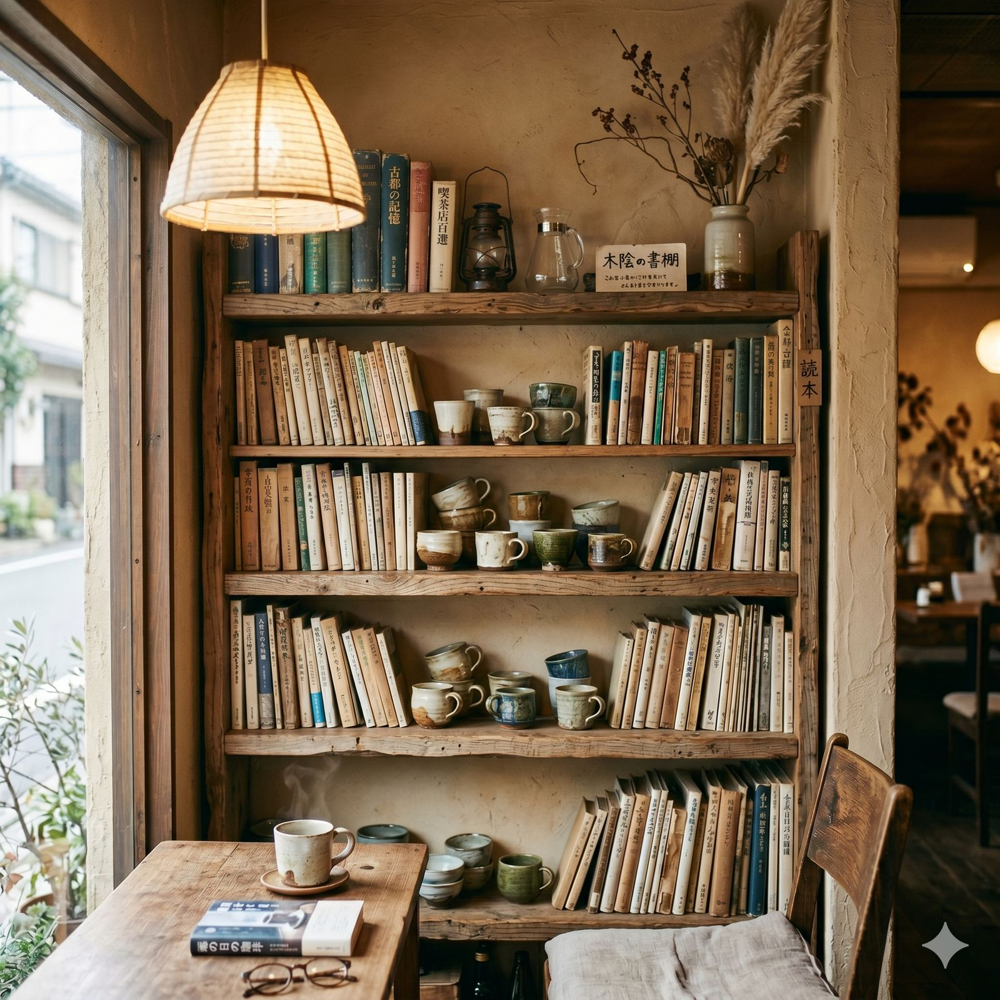

煦渡珈琲提供空間租借服務，適合小型聚會、工作坊、讀書會、企業包場、攝影拍攝等活動。我們希望這個空間不只是喝咖啡的地方，也能成為人與人之間產生連結的場所。
一樓包場 1F Private Event
一樓全區包場方案
| 容納人數 | 最多 25 人（座位）/ 35 人（站立） |
| 可用時段 | 週一至週五 18:30 – 21:30（營業時間後） |
| 包場費用 | NT$ 5,000 / 3 小時（含 15 杯指定飲品） |
| 延長費用 | NT$ 1,500 / 每小時 |
| 設備提供 | 投影幕、藍牙音響、白板、延長線 |
| 餐飲加購 | 可另行加訂甜點拼盤（NT$ 1,200 / 10 人份） |
一樓空間保留了完整的吧台區域，包場期間可安排吧台職人進行手沖示範或咖啡品鑑體驗，適合企業團建、客戶招待等場合。
二樓靜音區 2F Quiet Zone
二樓小型聚會方案
| 容納人數 | 最多 8 人 |
| 可用時段 | 每日 10:00 – 17:00（需提前 3 天預約） |
| 包場費用 | NT$ 2,000 / 3 小時（含 8 杯指定飲品） |
| 適合活動 | 讀書會、小型會議、手作工作坊、攝影 |
| 注意事項 | 二樓為靜音空間，不提供擴音設備 |
二樓的靜謐氛圍特別適合需要專注的小型聚會。落地窗引入充足自然光，木質書架和綠植營造出書房般的溫馨感。許多攝影師也喜歡租借二樓作為人像攝影的場地。
咖啡工作坊 Coffee Workshop
煦渡不定期舉辦咖啡相關的工作坊與體驗課程，也接受團體預約客製化課程。
常態工作坊
| 手沖入門班 | 2 小時 / NT$ 800 / 每人（含材料、講義、咖啡豆 50g） |
| 杯測體驗班 | 1.5 小時 / NT$ 600 / 每人（品鑑 4 支不同產區豆子） |
| 拉花初體驗 | 2 小時 / NT$ 1,000 / 每人（含牛奶練習不限量） |
| 親子咖啡課 | 1.5 小時 / NT$ 500 / 組（一大一小，小朋友做可可） |
工作坊每班最多 8 人，確保每位學員都能得到充分的指導。企業團體 10 人以上可另行安排專屬場次與客製化內容。

攝影 / 商業租借 Photo & Commercial
空間租借方案
| 商品攝影 | NT$ 2,000 / 2 小時（平日限定、不含飲品） |
| 人像攝影 | NT$ 3,000 / 3 小時（含 2 杯飲品） |
| 影片拍攝 | NT$ 5,000 / 半天（需提前討論拍攝內容） |
| 注意事項 | 所有拍攝需事先提供企劃書或拍攝大綱 |
煦渡的空間經常被雜誌、部落客、品牌選為拍攝場地。如果你有商業拍攝需求，歡迎來信洽詢，我們會盡量配合時間與場地安排。
預約方式 How to Reserve
請透過以下方式聯繫我們，告知活動日期、人數、活動類型，我們會在 24 小時內回覆確認：
- Email：ren.studio.dev@gmail.com
- LINE：renstudio.tw
- 電話：0976-858-794
預約確認後需支付 50% 訂金。活動前 3 天取消可全額退費，3 天內取消恕不退費。